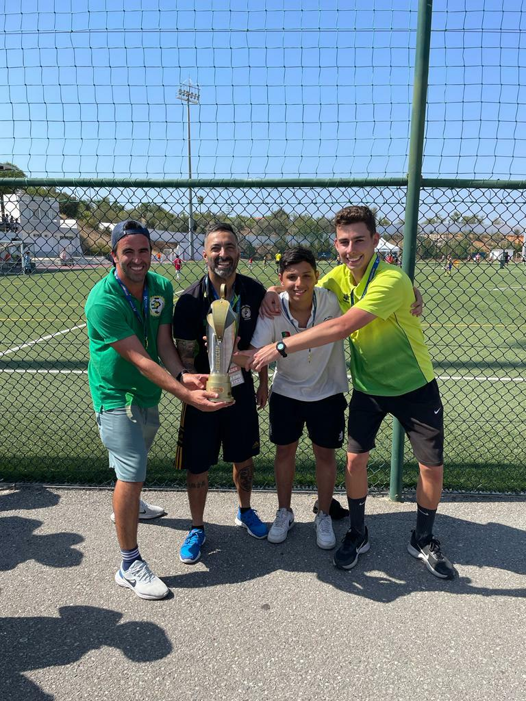

Nesta página, apresento fotos que espelham um pouco do que eu gosto de fazer, lugares que adoro frequentar e pessoas especiais na minha vida.
Jogar futebol, ir com a amigos a concertos, aproveitar as férias em família e ajudar desenvolvimento de jogadores de futebol são alguns dos meus hobbies.
